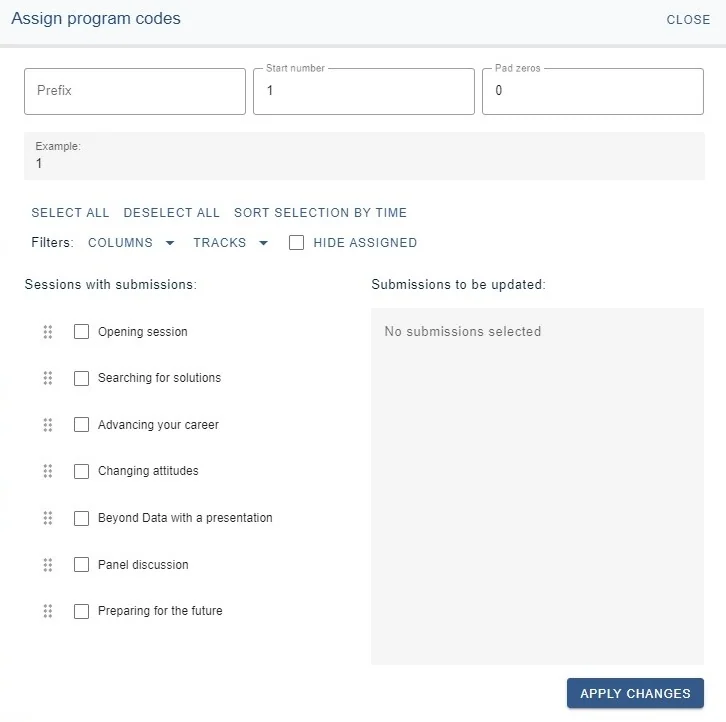
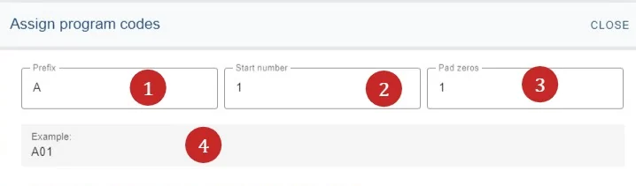
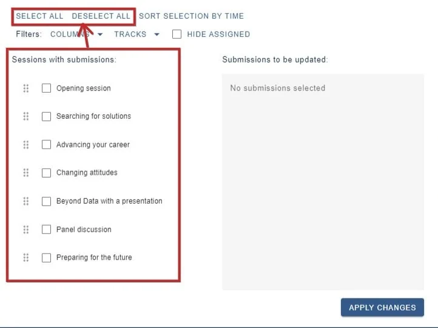
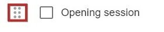
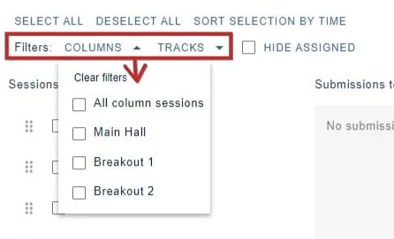
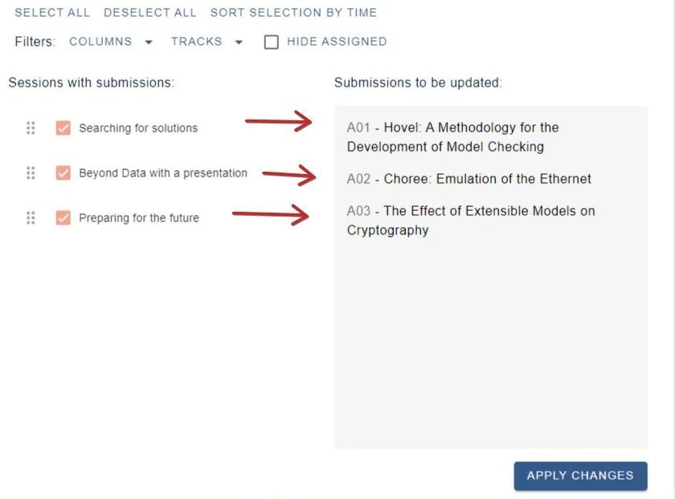
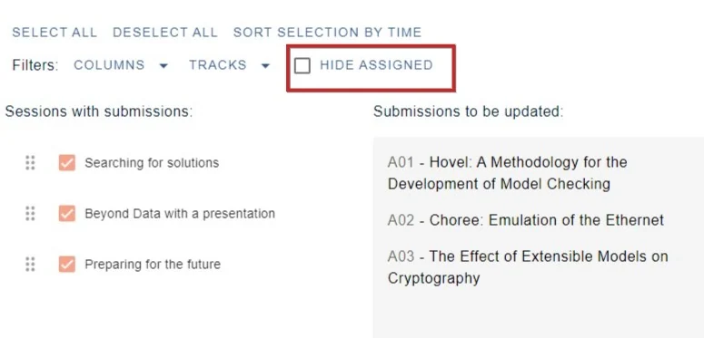

Assigning program codes
For event organisersNot an organiser?
When submissions are displayed in the program, the default is to include the submission ID but you can assign program codes within the program builder, if you require.#
submitter, reviewer, delegate etc), please click here .
Go to Event dashboard → Conference → Program → Builder
Click Settings (top right corner), then choose Assign program codes
This opens the program assignment panel.
NB. You can also assign program codes manually in the decisions table.

At the top, you can create your program code
Enter 1) a prefix (optional), 2) a start number, and 3) the amount of zeros you would like in front of the start number.
4) Displays how your choice will look.

The bottom half of the panel allows you to assign the program codes to the submissions.
The sessions are listed in order of day - time, eg, left to right. You can choose to select individually, bulk select, or deselect, should you wish.

You can change the order by dragging and dropping using this icon.

You can also use the filters if required.

Once you have selected your choices, they will show in the preview panel. Ensure you click Apply changes (at the bottom right) when you have assigned the program codes.

You can do this in batches and return whenever you need to.If you don't want to over-write any previously assigned submissions, ensure you check Hide Assigned.

The program code will now be displayed throughout the system using the program code, and not the submission ID.
Did this page solve it?
Thanks — this helps us fix it.
Didn't solve it? Ask our support team
No question is too small, and there's no charge for asking. Raise a ticket and someone who knows the software will pick it up.